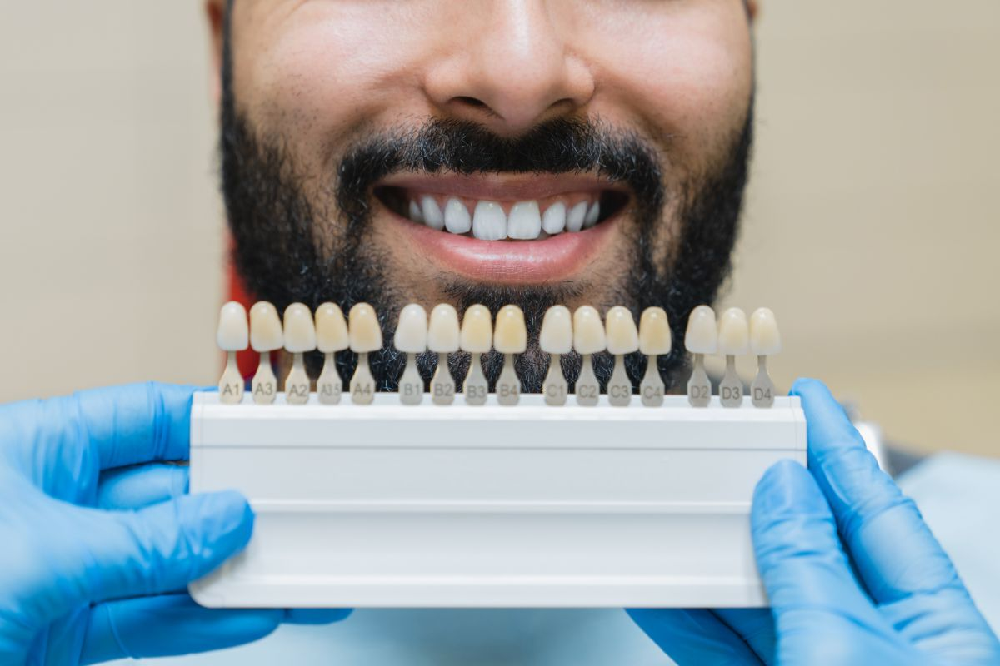

Option 01
Months
An implant
Preserves the bone and leaves the neighboring teeth untouched. It costs the most and takes the longest, and it needs enough bone in the site or enough to build on.
Hours09:00 to 20:00, varies by branch
Book an AppointmentNot sure which treatment you need?
Thirty-one specialists across nine disciplines. Tell us what you want looked at and we will place you with the one who handles it.
Self-pay clinic. We do not accept HMO or dental insurance. Every treatment is paid directly.
Book an Appointment
Dental implants, titanium fixtures
A dental implant is a titanium root placed into your jaw to replace a missing tooth.
Eight stages, and the third one is where this page argues against itself.
A bridge and a partial denture are real answers, not consolation prizes, and the same restorative specialist makes each of them. That is the only condition under which a comparison written by the seller is worth reading.
Next
Stage 01, the three components of a finished implant, and the biological process that has to complete before the visible part is even made.
An implant replaces the part of the tooth nobody sees.
It is a threaded titanium fixture placed into the jawbone, where bone grows onto its surface and locks it in place. That process is called osseointegration, it takes three to six months, and only after it has happened does the visible part go on.
A finished implant has three components. The fixture in the bone. The abutment, which is the connector that comes through the gum. The crown on top, made in zirconia or lithium disilicate to match the teeth beside it.
A gap is not a stable situation that stays as it is.
When a tooth is lost the bone that used to hold it starts to shrink, because bone maintains itself in response to load. The teeth either side drift toward the space and the tooth above or below drifts into it. An implant reloads the bone and stops that drift, and unlike a bridge it does so without cutting down the healthy teeth on either side.


Next
Stage 02, what has to be true of your gums, your bone and your medical history before a fixture can go in.
This suits you if you are missing one tooth, several teeth or a full arch, if your gums are healthy or can be made healthy, and if there is enough bone in the site or enough to build on.
The honest limits matter more here than on almost any other treatment page, because this is the largest single restoration most patients ever buy.
These do not decay. The bone around them can still be lost, and it is lost silently. If you will not commit to recall appointments and daily cleaning around the crown, this is the wrong investment and you should be told so before you make it.
The six conditions that change the plan
Next
Stage 03, the three real options set side by side, with no winner declared in the markup.
A prosthodontist here builds all three, so the recommendation is not shaped by what happens to be on offer.
An implant
Preserves the bone and leaves the neighboring teeth untouched. It costs the most and takes the longest, and it needs enough bone in the site or enough to build on.
A fixed bridge
Takes weeks rather than months and needs no bone volume. The cost that is not money is that two healthy teeth either side are cut down to carry it.
A removable partial
The least invasive and the quickest to make, and the least stable to live with. Nothing healthy is cut, and comfort is what you trade for that.

Next
Stage 04, the eight appointments spread across the months, and the one stage that a shorter timeline elsewhere is usually shortening.
Eight steps, and step 05 is the one a shorter timeline elsewhere is usually shortening.
Bone grows onto the fixture over a healing period measured in months. Nothing is rushed there, because the waiting is not a scheduling inconvenience, it is the treatment working. A temporary tooth can be worn during that period in most cases.
| Step | What happens | How long |
|---|---|---|
| 01 Consultation and 3D CBCT scan | Examination, medical history, and a cone beam scan showing bone height, width and density, the position of the nerve canal in the lower jaw and the floor of the sinus in the upper. Your case is either straightforward on that scan or it is not, and you are told which at this appointment. | 60 minutes |
| 02 Planning | The surgeon and the restoring clinician agree the position before placement, working backwards from where the crown has to sit. | 1 to 2 weeks |
| 03 Preparatory treatment, where needed | Extraction, socket preservation, bone graft or sinus lift, then healing time. Not every case needs this stage. Cases that do cannot skip it. | 3 to 6 months |
| 04 Placement | Under a local anesthetic. The site is prepared in sequence and the fixture is placed to a measured torque, with sutures where the technique calls for them. Swelling and soreness are normal for two to three days. | 60 to 90 minutes |
| 05 Osseointegration | Bone grows onto the fixture. This is the stage described above, and it is not compressible. | 3 to 6 months |
| 06 Scan and crown fabrication | Once integration is confirmed, the site is scanned and the abutment and crown are made. | 2 to 3 weeks |
| 07 Fitting and bite check | The crown is fitted and the bite is checked and adjusted. An implant crown has no periodontal ligament, so it lacks the natural give of a real tooth, and getting the load right at this appointment is what protects it. | 60 to 90 minutes |
| 08 Maintenance recall | The tissue is probed and the bone level is monitored. This appointment is not optional, and the reason is in stage 02. | Every 6 months, ongoing |
Next
Stage 05, why two specialists agree the position before anything goes into bone.
The surgical placement is performed by an oral surgery specialist. The crown that goes on top is made by a prosthodontist. Both work in the same practice, and both agree the plan before the fixture goes in.
That single fact is the reason this treatment reads differently here. In a split arrangement the surgeon places the fixture and somebody else has to restore whatever position it ended up in. When both plan together from the same scan, it goes where the crown needs it rather than merely where the bone is easiest.
If your case also needs periodontal treatment before placement, or orthodontic space opening before the crown, the periodontist and the orthodontist are in the same practice too.
Next
Stage 06, the four named systems, and what each measures that an estimate cannot.
Planning one of these without a scan is planning from a shadow.
We name the systems because a name can be checked. An adjective cannot.

3D CBCT imaging
For this treatment it is not a convenience, it is the basis of the plan. It measures how much bone you actually have in three dimensions, where the inferior alveolar nerve runs and where the sinus floor sits. Fixture length and diameter are chosen from those measurements.
All four clinicsPiezotome ultrasonic instrumentation
Where the case involves a sinus lift, a ridge split or a graft, ultrasonic bone cutting is tuned to mineralized tissue and is far less likely to tear the sinus membrane or damage adjacent soft tissue than a rotating bur.
Named installed systemiTero intraoral scanner
The site and the opposing arch are captured digitally for the crown, so the fit and the contact points are verified as data before the crown is made rather than adjusted afterwards.
Named installed systemOccluSense bite analysis
An implant crown cannot feel overload the way a natural tooth can, because it has no ligament. This records where your bite lands and how hard, so the crown can be adjusted out of the heavy contacts rather than left to absorb them.
Named installed systemNext
Stage 07, the money, and the one question to ask so that the number you are given is the number you think it is.
Per implant. Anchored to published market ranges, not to an Elevate price list.
Every peso amount on this page is representative and anchored to published market ranges, not a price quoted by this practice. Elevate quotes your own figure per treatment, after a clinical assessment.
Ask for the figure to be broken into its stages: surgical placement, any grafting, the abutment, and the crown.
A number quoted for one stage alone is not the cost of a finished tooth, and you should know which one you are being given.
What moves the final figure
How you pay
Elevate Dental does not accept HMO or dental insurance. All treatment is self-pay, and HMO coverage cannot be used for dental treatments at our clinics. Payment is by cash, bank cheque, bank transfer, debit or credit card, or QR payment.
The exact figure is confirmed after your scan has been read, and it is given to you in writing before anything is booked.
Next
Stage 08, the last one: the questions people actually ask, and the upkeep that decides how long this lasts.
Published long-term studies of osseointegrated implants report high survival at ten years and beyond, and yours depends heavily on gum health, smoking and whether you keep your recalls. What can be said honestly is this: these can and do fail, more often through bone loss around them than through anything breaking, and that failure is usually preventable. Nobody can promise you a fixed term, and you should be careful with anyone who offers one.
While you are deciding
For a straightforward case with good bone, expect four to six months from placement to fitted crown, most of which is healing time you spend doing nothing. A case needing extraction and grafting first runs longer, commonly nine to twelve months from start to finish.
Placement is done under a local anesthetic and the surgery itself should not be felt. Afterwards, expect soreness and swelling for two to three days, controlled with prescribed analgesia. Most patients describe the recovery as easier than the extraction that preceded it. Pain that worsens after day three is a reason to call the clinic.
In selected cases a temporary crown can be fitted at placement. Whether yours qualifies depends on the stability achieved when the fixture goes in and on where the tooth sits in your bite, and that is decided in surgery rather than in advance. The final crown still waits for integration.
Stage 03 sets the three side by side. The short version is that one restorative specialist makes every option and will tell you which your case actually calls for.
Once it is in
It is removed, the site is allowed to heal, and the case is reassessed. Sometimes a second can be placed after grafting. Sometimes a bridge becomes the better answer. What happens to the fee in that situation is a policy question, and the answer to it is pending below.
Replacement and remake terms have not been supplied by the practice in writing, so no warranty statement is published on this page. Ask at the consultation and get the answer in writing before you commit.
Brush as normal, and clean under and around the crown daily with an interdental brush, superfloss or a water flosser as directed. Bacteria behave the way they behave around a tooth, and the bone loss they cause gives no warning until it is advanced. Daily cleaning plus a six-month recall is the whole maintenance requirement.
Ice on and off for the first day. Soft, cool food for several days. No smoking. No rinsing or spitting for the first 24 hours, then warm salt-water rinses. Sleep with your head raised the first night. Take prescribed medication exactly as directed, avoid chewing on the site until you are told the fixture has integrated, and keep every review appointment.

The first consultation is free. It includes a proper examination and, where your case calls for it, reading your own scan with the surgeon who would do the work. You will be told what your bone can support, what the alternatives are, and what the whole case costs in writing before you commit to any part of it. Confirm current consultation terms with the clinic before you book.
Outcome
Elevating People's Lives, One Smile at a Time.
Tell us what you want looked at and we will place you with the specialist whose discipline the case belongs to, at whichever of the four clinics suits your week.
Self-pay clinic. We do not accept HMO or dental insurance. Every treatment is paid directly.